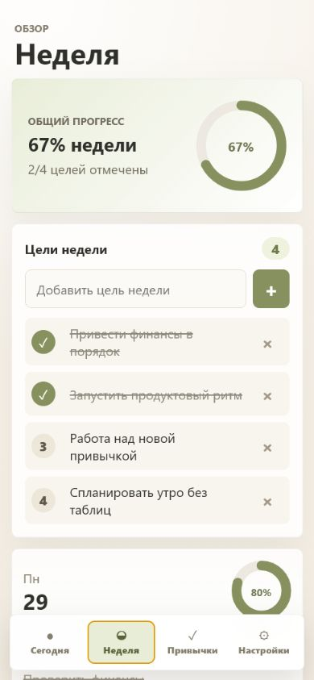
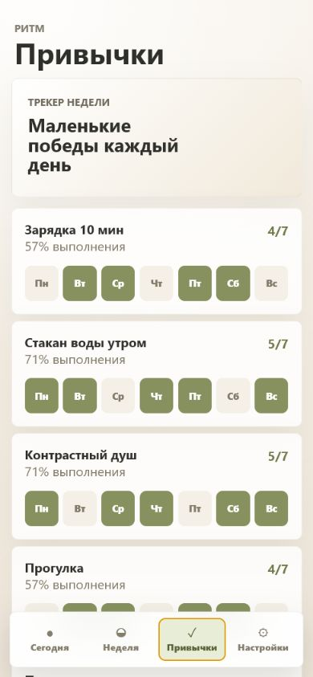
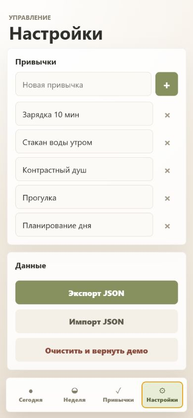

Фокус дня
Задачи, прогресс и итог дня на первом экране.
Без таблиц. Без лишних экранов.
Задачи, прогресс и итог дня на первом экране.

Цели, карточки дней и планирование задач вперед.

Отметки по дням недели и процент выполнения.

Редактирование привычек, импорт и экспорт JSON.